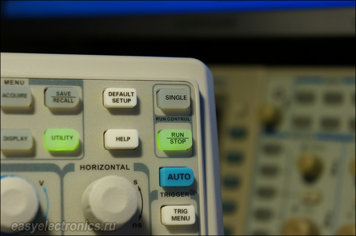

Прикупили мы тут для себя в Toolboom осциллограф Siglent SDS 1072CML. О своих впечатлениях от девайса я сейчас и поведаю.
Итак, Siglent SDS 1072CML — это малобюджетный осциллограф начального уровня. Про аналогово-измерительную часть тут особо говорить нечего. У всех подобных осциллографов она из одной бочки и отличается друг от друга чуть больше чем никак. В частности это практически полный клон младших моделей LeCroy и брат близнец ATTEN и АКИП. Многочисленные разборки разных осциллографов это подтверждают, у меня тут даже ролик публиковался про это.
Да и для ремонтника/радиолюбителя это не столь важно, т.к. в этом случае осциллограф в 99.9% используется как показометр, с целью посмотреть что вообще происходит и космическая точность там не требуется. А вот интерфейс, функции и удобство пользования стоит во главе угла. Поскольку мой основной осциллограф это старичок Rigol DS1042CD (все это также справедливо и к другим Rigol тысячной серии, например 1052E), то все буду сравнивать с ним.
Для общего впечатления, можно посмотрет обзор от Toolboom
Сразу бросается в глаза большой экран. Он ощутимо шире экрана Rigol. Если у Rigol ширина экрана 11.5см, то тут все 15см, что позволяет вписать куда более широкую осциллограмму, за больший период времени. Целых 18 делений по ширине! Это очень круто, особенно когда разглядываешь всякие последовательности сигналов при отладке.
Следующее важное отличие — это по индивидуальной крутилке на каждый канал. В отличии от Rigol, где крутилка одна, а нужный канал выбирается предварительно кнопкой. Вы бы знали как это бесит! Тут же все по уму, у каждого канала свой манипулятор.
Еще одна важная в интерфейсе вещь это кнопка Single, которой нет у Rigol. Эта кнопка отвечает за одиночный запуск триггера. Напомню, что триггер в осциллографе может работать в разном режиме:
Так вот, очень часто, когда нужно поймать какое то конкретное событие пригождается одиночный режим, но при этом часто хочется видеть и картину общую. В результате постоянно переключаешься из одночного в Авто/Нормальный и обратно. В Rigol для этого надо лезть в меню и занимает это несколько нажатий (или яростно дрочить кнопки Run/Force, чтобы посмотреть что там идет фоном после сработки). А тут для этого есть отдельная кнопка, которая при нажатии переводит в Одиночный режим и возвращает как было при отжатии. ОЧЕНЬ удобно.
Но, несмотря на это, габариты не сильно возросли. Его щщи шире Ригола на каких-то полтора сантиметра и равна около 32см. Глубина его 12.5см, если не брать в расчет возможное подлючение COM или USB, а высота, с выставленными ножками 17.5см. А так все весьма прилично и качественно. Приятно крутится, не болтается, на ощупь радует.
Итак на календаре 7 апреля. Ровно год назад я написал первый пост с которого зародился этот сайт. Хочется сказать спасибо восьмистам читателям которые заходят ко мне каждый день, за проявленный интерес к моему проекту, приятно осознавать что то что я пишу хоть кому-то нужно. Двойное спасибо тем кто не только читает но и комментирует записи, и задаёт каверзные вопросы. Они заставляют меня лучше разобраться в чем-либо и пошевелить мозгами. Короче, оставайтесь на связи. Впереди еще много интересного! В связи с написанием диплома, времени у меня поубавилось, но сайт будет обновляться в обычном порядке. И наконец отдельное спасибо тем кто делает пожертвования, пусть небольшие но всё равно приятно. Кстати теперь когда появилась реклама от яндекса можно в знак благодарности кликнуть по ней и я получу за это небольшое вознаграждение. Предложения, вопросы и поздравления принимаются в комментариях! Ура товарищи :-)